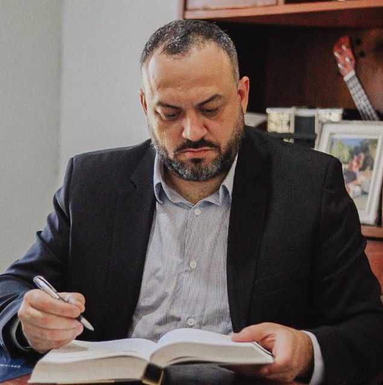
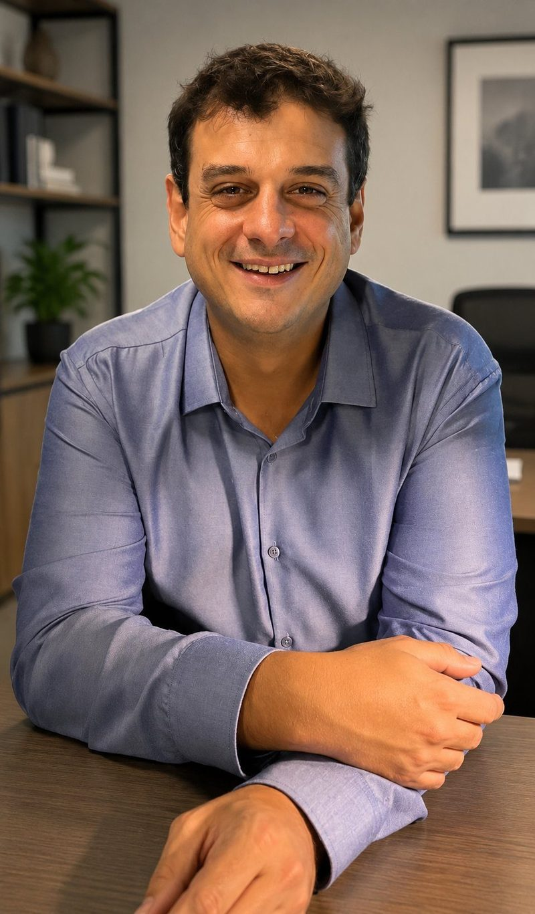

Direito que
brota da terra,
deferido pela lei.
Advocacia enraizada no Sul, no novo marco ANVISA e na causa. Do habeas corpus à autorização sanitária — cada processo, do início ao deferimento.
Vivência real,
não encenada
Oyarzabal & Rostirolla é uma sociedade de advogados especializada em cannabis medicinal e cânhamo industrial, com atuação prioritária na Região Sul. Mateus Oyarzabal é paciente e pai de paciente. Leonardo Rostirolla é político e ativista de Guaíba.
A luta não é produto de marketing — é o dossiê de vida de cada sócio, transformado em técnica jurídica.
Dois advogados, uma causa

Transformou a vivência como paciente e pai de paciente em mandato de luta. Referência jurídica para associações de pacientes no RS. Mestre de cerimônia da Marcha da Maconha de Porto Alegre.

Representa entidades do setor no GT de Cannabis do Conselho Estadual de Saúde e na Frente Parlamentar da Cannabis Terapêutica da Assembleia Legislativa do Estado do Rio Grande do Sul. Referência em cânhamo industrial.
Onde o direito encontra a causa
Dominamos as regras
porque ajudamos a construí-las
Da dúvida à estratégia,
sem atalhos jurídicos
Cada paciente, associação ou empresa exige uma leitura própria. A primeira conversa serve para identificar o risco, conferir a documentação e definir o instrumento jurídico adequado.
- 01
Escuta e análise do caso
Entendemos o tratamento, o cultivo, a atividade associativa ou o projeto empresarial e verificamos o cenário jurídico.
- 02
Organização das provas
Orientamos sobre relatórios, prescrições, autorizações, documentos técnicos e demais elementos necessários à estratégia.
- 03
Definição da medida
Indicamos o caminho possível: consulta preventiva, habeas corpus, defesa, regularização, compliance ou atuação institucional.
- 04
Protocolo e acompanhamento
Conduzimos a medida e informamos cada avanço, exigência ou decisão relevante durante o processo.
Não sabe por onde começar? Conte o contexto do seu caso. A análise inicial aponta os próximos passos possíveis.
Solicitar análise inicialInformação jurídica
antes da decisão
Respostas gerais para dúvidas recorrentes. A orientação adequada depende dos documentos e das circunstâncias de cada caso.
O autocultivo medicinal é automaticamente permitido no Brasil?
Não existe uma autorização automática aplicável a todas as pessoas. A proteção jurídica do cultivo medicinal depende da situação concreta e, em muitos casos, é buscada judicialmente por meio de habeas corpus preventivo.
O que é o habeas corpus preventivo para cultivo?
É uma medida judicial que busca afastar o risco de constrangimento penal relacionado ao cultivo destinado ao tratamento de saúde. O pedido precisa demonstrar a finalidade terapêutica e a coerência da documentação apresentada.
Quais documentos costumam ser analisados?
Em geral, são avaliados prescrição e relatório de saúde, histórico do tratamento, autorização de importação quando existente, comprovantes de conhecimento técnico e documentos pessoais. A lista final varia conforme o caso.
Existe garantia de decisão favorável ou prazo fixo?
Não. Toda medida judicial depende das provas, da avaliação do tribunal e das particularidades do processo. Após a consulta, explicamos riscos, possibilidades e etapas com clareza.
O escritório atende associações e empresas?
Sim. Atuamos na organização jurídica de associações de pacientes, governança, prevenção de riscos, adequação regulatória e estruturação de iniciativas ligadas à cannabis medicinal e ao cânhamo.
O atendimento pode ser feito à distância?
Sim. A análise documental e as reuniões podem ocorrer de forma remota, permitindo atendimento em diferentes regiões do Brasil, conforme a natureza da demanda.
Seu caso merece
quem entende a causa.
Atendemos pacientes, associações, cultivadores e empresas do setor.